← The big picture
The slides
The whole course in 12 slides, ready to present
Built from the same words, charts and drawings as the website. Present full screen, open the presenter view with speaker notes, or download the PDF or PowerPoint.
All 12 slides, each with its headline
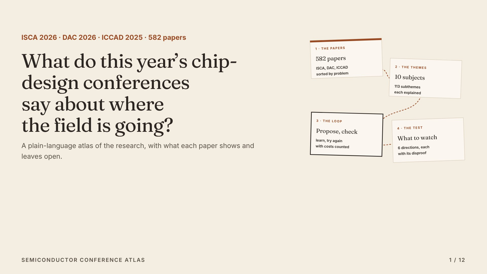
1 · What do this year’s chip-design conferences say about where the field is going?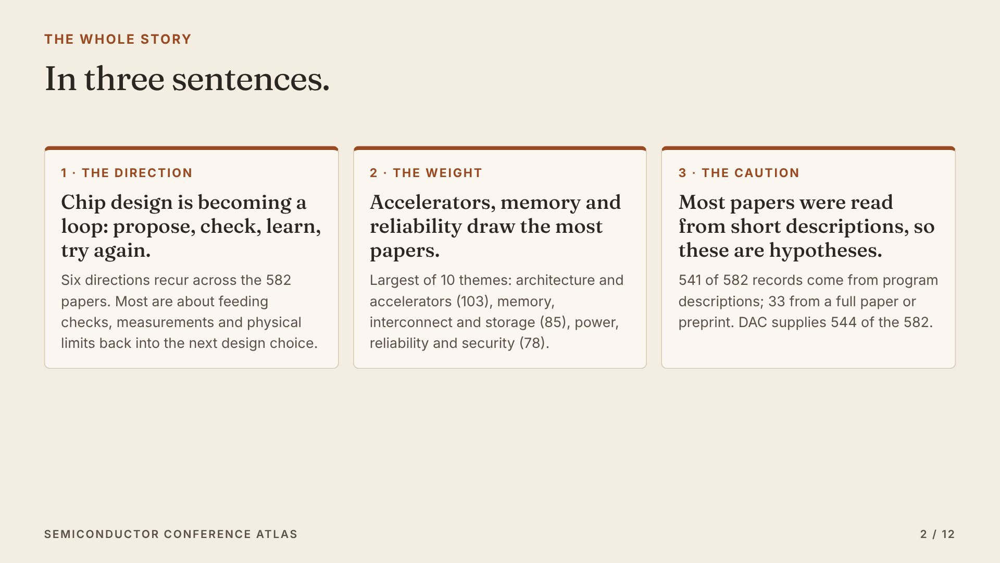
2 · The whole story in three sentences.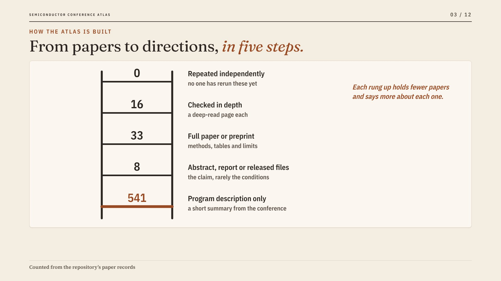
3 · The atlas in five steps: papers, themes, subthemes, deep reads, what to watch.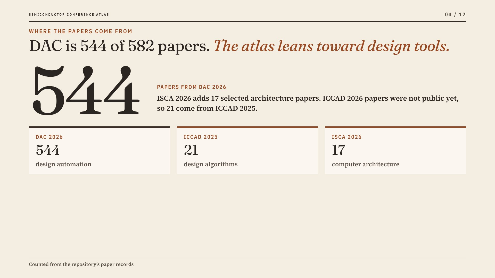
4 · DAC supplies 544 of the 582 papers.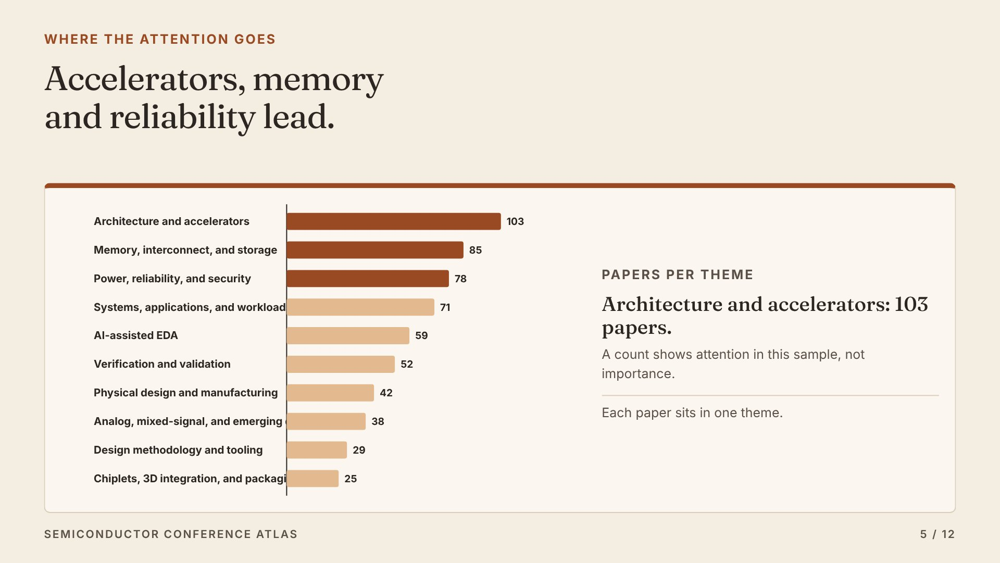
5 · Accelerators, memory and reliability are the three largest of 10 themes.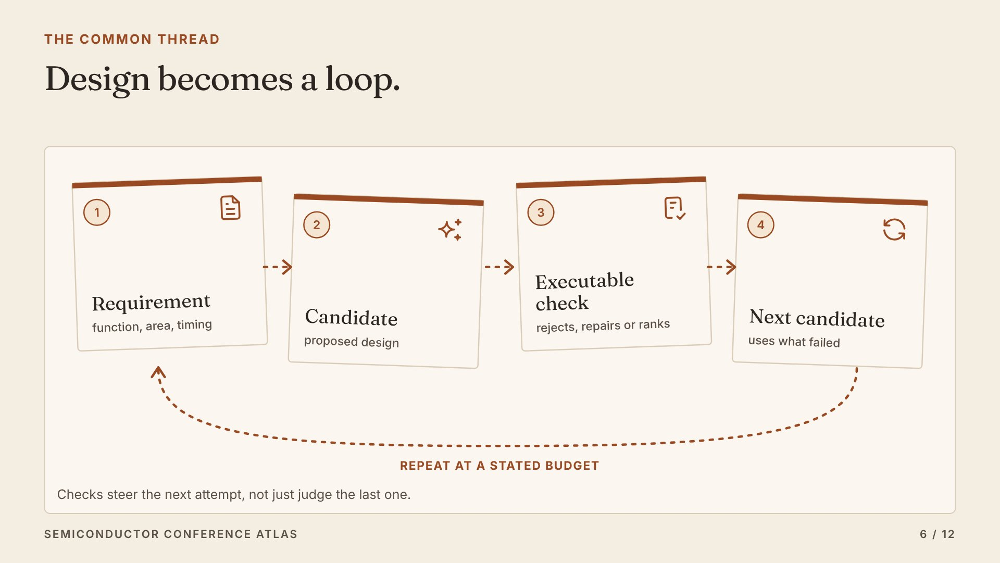
6 · Direction: design becomes a loop that checks every candidate and learns from what failed.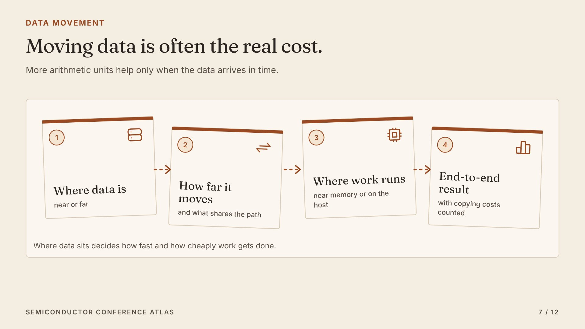
7 · Direction: moving data often costs more than computing it.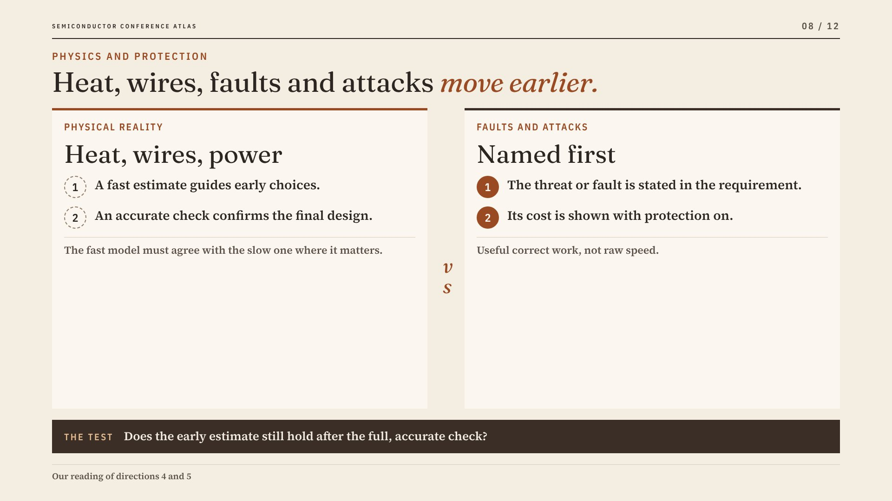
8 · Directions: physical limits and faults enter the design early.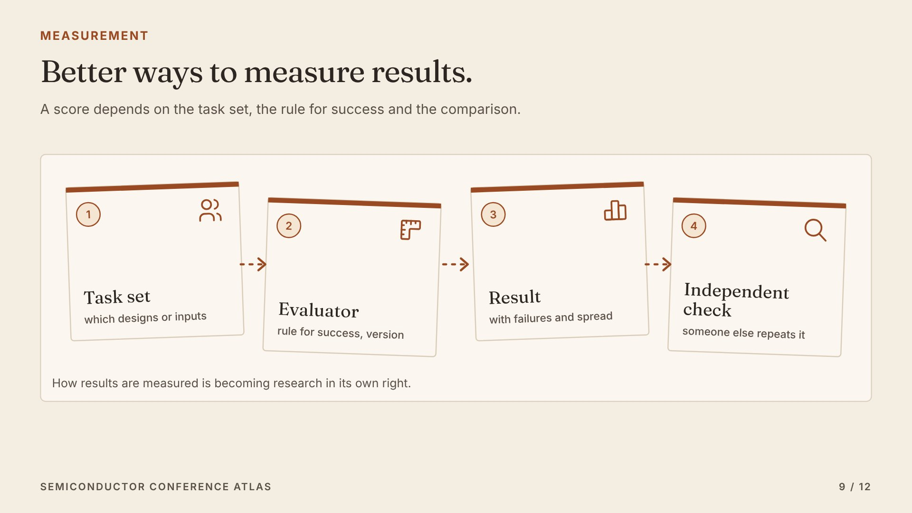
9 · Direction: how results are measured is becoming research in its own right.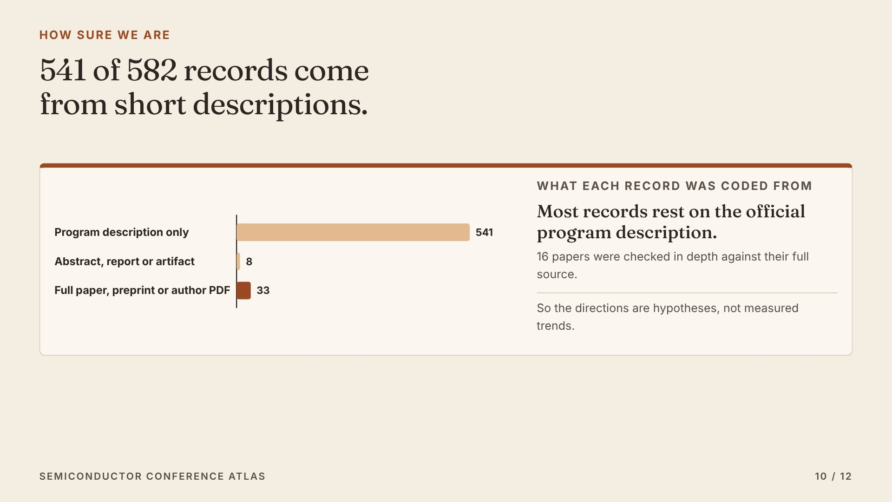
10 · Only 33 of 582 papers were read from a full paper or preprint.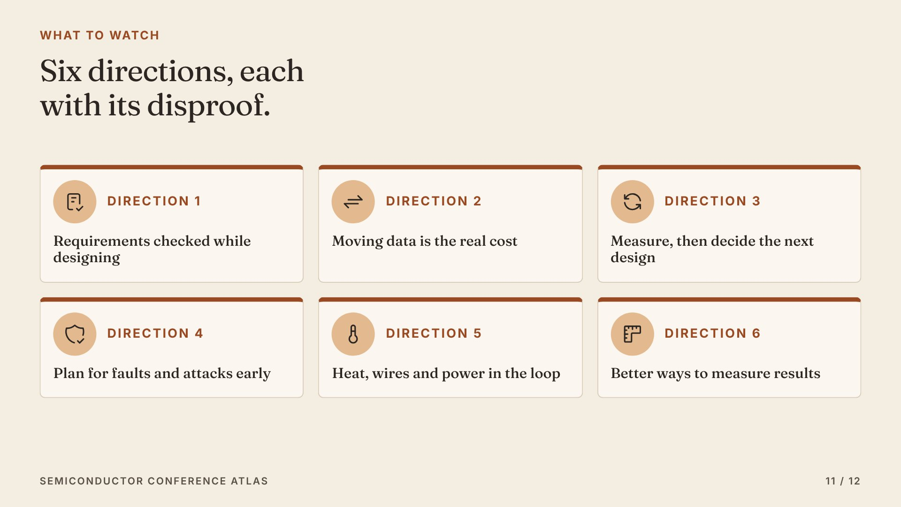
11 · Six directions to watch, each with a test that could disprove it.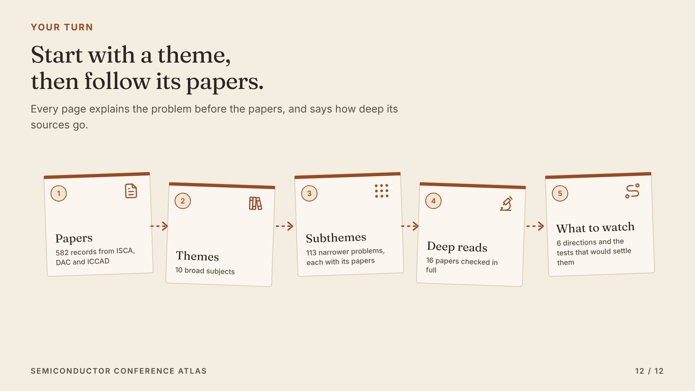
12 · Where to start: themes, subthemes, deep reads and the six directions.